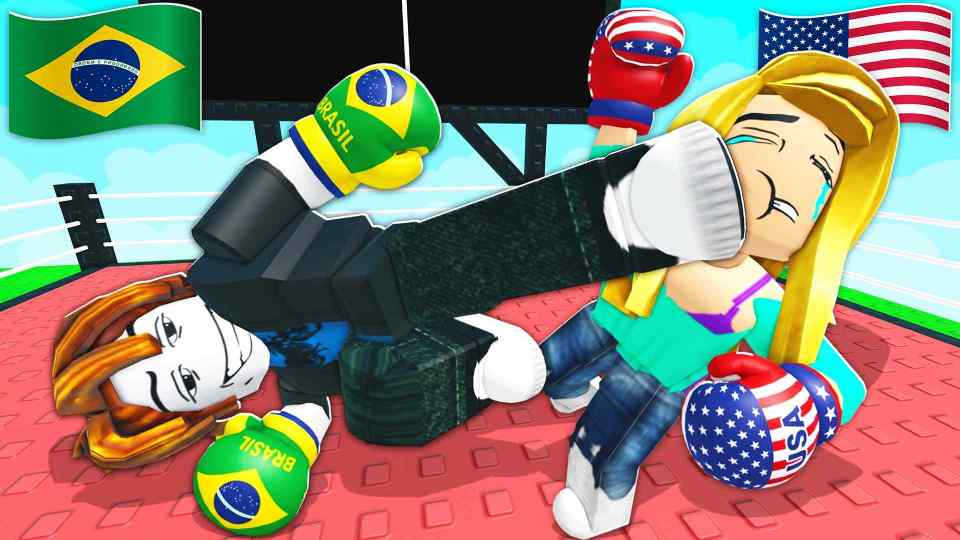
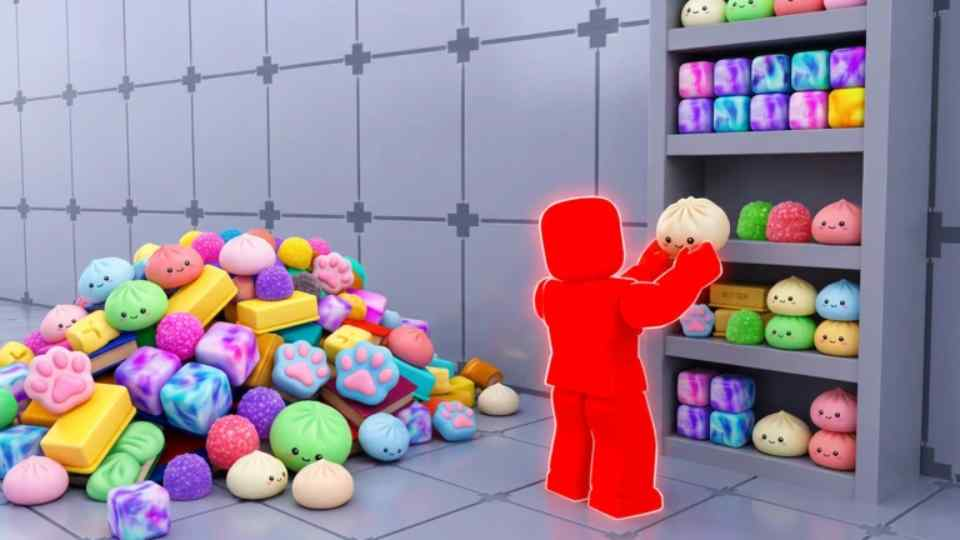
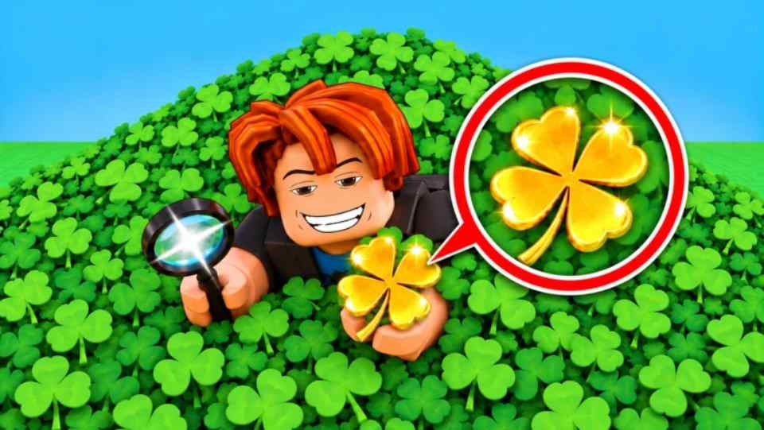

My Projects
Here are all of my projects that I have worked on:
-
Country Battles 🥊💪

Country Battles thumbnail - Country Battles is a game where you can fight other players in a battle royale style game. You can choose your country and fight for your country to be the last one standing.
- I was recently given a major role in the development of the game. I am currently in charge of growth, updates, and maintenance.
Country Battles Stats
Role Visits Peak CCU Growth, Updates, Maintenance 5.7M+ 12K+ -
Clean the Squishies!

Clean the Squishies! thumbnail - Clean the Squishies is a game where you have to clean all the squishies off the floor and place them onto organized shelves.
- This game was my first big hit. I ran every part of development, updates, and live operations.
Clean the Squishies! Stats
Role Visits Peak CCU Development, Updates, Live Operations 88.2M+ 54.5K+ -
Search for the Clover 🍀

Search for the Clover 🍀 thumbnail - Search for the Clover is a game where you need to find the four leaf clover in a field of over 20 thousand of them!
- This game was a complete solo project where I ran all parts of development, updates, live operations, and advertisement strategy.
Search for the Clover 🍀 Stats
Role Visits Peak CCU Development, Updates, Live Operations, Advertisement Strategy 130K+ 300